The Horizon mark + supporting system for DarkNyx — a darkpool protocol with TEE-attested execution and zero-knowledge settlement.
A half-moon settling into two horizon lines. Three readings, all intentional: a pool surface at night, a settlement ledger, the boundary between public and private state.
Master is SVG, drawn on a 120-unit grid. Below 24px, swap to the micro variant — a single horizon line that survives at favicon size.

Ink + Chalk are the system. Slate and Fog are mid-tones for secondary text. Cobalt is reserved for marketing surfaces — never the mark. Signal colors are product-UI only.
Geometric without being cold. Both Google Fonts, OFL-licensed. Display and body share Space Grotesk to keep the system tight; mono is reserved for data and addresses.
One source of truth, two delivery formats. Import the CSS for direct use, or feed the JSON to Style Dictionary / Tailwind / your build pipeline.
| Token | Value | Use |
|---|---|---|
| --nyx-radius-xs | 2px | Default. Institutional, sharp. |
| --nyx-space-4 | 16px | Standard padding inside cards. |
| --nyx-fs-md | 15px / 1.55 | Body text default. |
| --nyx-dur-base | 240ms | Standard transition duration. |
| --nyx-ease-standard | cubic-bezier(0.2, 0, 0, 1) | Default easing curve. |
Where x = the height of the half-moon. Never crop into this margin.
Two motion primitives carry the brand. rise for entrances — the moon settling into position. orbit for loading — a single dot tracing the horizon's perimeter.
<link rel="icon" type="image/svg+xml" href="/favicon.svg"> <link rel="icon" type="image/png" sizes="32x32" href="/favicon-32.png"> <link rel="apple-touch-icon" sizes="180x180" href="/apple-touch-icon.png"> <link rel="manifest" href="/site.webmanifest"> <meta name="theme-color" content="#0a0a0d">
export function DarkNyxMark({ size = 32, color = 'currentColor' }) {
return (
<svg viewBox="0 0 120 120" width={size} height={size}>
<defs><clipPath id="h"><rect width="120" height="66"/></clipPath></defs>
<circle cx="60" cy="60" r="36" fill={color} clipPath="url(#h)"/>
<rect x="18" y="66" width="84" height="4" fill={color}/>
<rect x="18" y="78" width="60" height="4" fill={color} opacity="0.5"/>
</svg>
);
}
@import url("nyx-design-system/tokens/tokens.css");
.button {
background: var(--nyx-ink);
color: var(--nyx-chalk);
border-radius: var(--nyx-radius-xs);
padding: var(--nyx-space-3) var(--nyx-space-5);
font-family: var(--nyx-font-display);
transition: opacity var(--nyx-dur-base) var(--nyx-ease-standard);
}
| svg/ | 9 master vectors — mark, micro, lockups, wordmarks, in ink + chalk |
| png/mark-{ink,chalk}/ | 20 transparent PNGs — 16, 24, 32, 48, 64, 128, 192, 256, 512, 1024px |
| png/app-icon-{light,dark}/ | 10 padded square icons — 180, 192, 256, 512, 1024px |
| favicon/ | Full web bundle — favicon.svg, 16/32/48 PNG, apple-touch, android-chrome 192/512, site.webmanifest, head-snippet.html |
| social/ | OG image (light + dark), Twitter banner 1500×500, Twitter avatar 400×400 (light + dark), GitHub avatar 460×460 |
| tokens/ | tokens.json (W3C-style) + tokens.css (CSS custom properties) |
| cli/ | nyx-ascii.txt — terminal banner |
| brand-guidelines.html | This document. |
| README.md | Quick-start. |